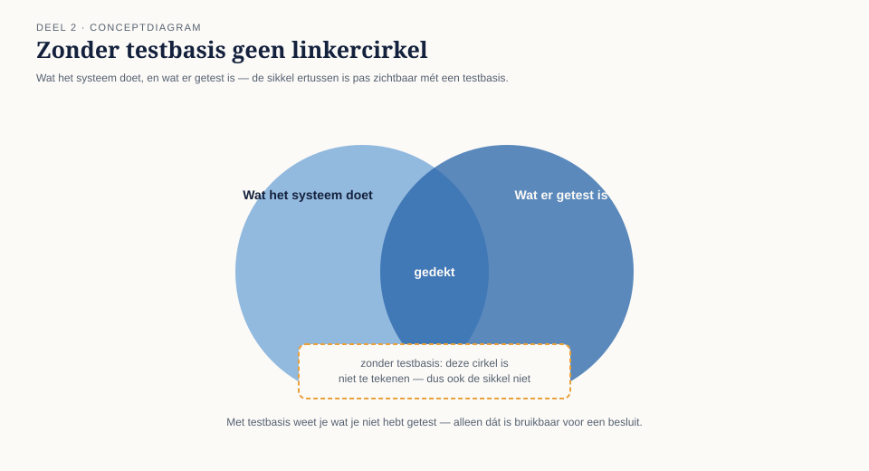
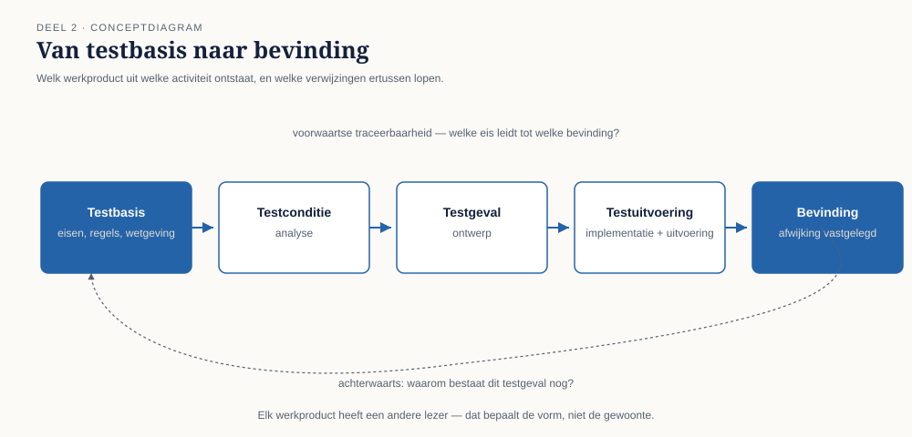
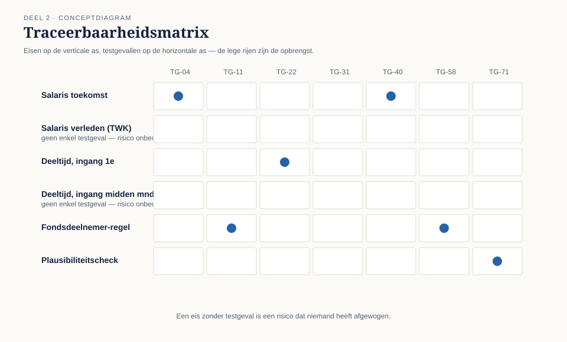

Cursus Testen en Kwaliteitsborging · Niveau 1 (ISTQB CTFL) · Deel 2 van 30
Het testproces.
Iris' eerste vraag bij Meridiaan leek eenvoudig: welke eisen zijn met de 312 testgevallen van WGP 2.0 afgedekt? Niemand kon hem beantwoorden. Dit deel behandelt de testactiviteiten die geen fasen zijn maar een doorlopende cyclus, de testwerkproducten die daaruit voortkomen, en de testbasis en traceerbaarheid waarmee u zichtbaar maakt wat er níet is getest — en sluit daarmee bevinding T1.
11secties
±2uleestijd + werkboek
7controlevragen
T1bevinding gesloten
Positionering. Deze cursus is een voorbereiding op het ISTQB Certified Tester Foundation Level-examen (en voor latere delen Advanced Level) en uitdrukkelijk geen vervanging van het officiële ISTQB-syllabusmateriaal, te raadplegen via istqb.org. Alle formuleringen, figuren en werkvormen in dit materiaal zijn van Ductus; studeer voor het examen altijd óók de officiële bron.
Niveau 1: ➊ Waarom getest wordt → ➋ Het testproces (hier) → ➌ Testen in de levenscyclus → ➍ Statisch testen → ➎ Black-boxtechnieken → ➏ White-box en ervaringsgebaseerd testen → ➐ Risicogebaseerd testen → ➑ Uitvoeren en bevindingen → ➒ Rapporteren en gereedschap → ➓ Examentraining en capstone
01
Waar dit deel over gaat
⏱ 8 min
In deel 1 kwam u het testrapport van WGP 2.0 tegen: 312 testgevallen, 306 geslaagd, en geen enkele mogelijkheid om vast te stellen wat er níet was getest. Dit deel geeft daar het instrumentarium bij: het testproces, de testbasis en traceerbaarheid.
Aan het eind van dit deel kunt u:
de testactiviteiten benoemen en uitleggen wat elke activiteit oplevert, en waarom het geen fasen zijn;
de belangrijkste testwerkproducten noemen en per werkproduct aangeven wie de lezer is;
het begrip testbasis toepassen en beoordelen of een testbasis toetsbaar is;
traceerbaarheid in beide richtingen uitleggen en toepassen op een concrete testset;
beargumenteren welke mate van onafhankelijkheid in welke situatie passend is.
Dit deel sluit bevinding T1: geen enkel testgeval bij WGP 2.0 verwees naar een eis of regel.
02
De vraag die niemand kon beantwoorden
⏱ 8 min
Twee weken na haar aantreden stelde Iris Verweij aan Marijke de Groot een vraag die eenvoudig leek: "Welke eisen zijn met deze 312 testgevallen afgedekt?"
Marijke zocht een uur. Ze vond een testgevallenlijst in een spreadsheet, met kolommen voor nummer, omschrijving, stappen, verwacht resultaat en uitkomst. Wat er niet in stond: waaróm dit testgeval bestond. Nergens een verwijzing naar een hoofdstuk, een eis, een regel, een schermontwerp.
Daarmee was de vraag onbeantwoordbaar. Niet moeilijk — onbeantwoordbaar. U kunt uit die spreadsheet aflezen wat er getest is. U kunt er nooit uit afleiden wat er níet getest is, want de verzameling waarmee u zou moeten vergelijken ontbreekt.

Figuur 2-1 — Twee cirkels die elkaar deels overlappen: "wat het systeem doet" en "wat er getest is". Zonder testbasis kunt u de linkercirkel niet tekenen, en dus ook de sikkel ertussen niet.
Kernzin
Zonder testbasis weet u wat u hebt getest. Met testbasis weet u wat u niet hebt getest. Alleen het tweede is bruikbaar voor een besluit.
Dit is bevinding T1, en dit deel gaat over het proces dat haar voorkomt.
03
De testactiviteiten
⏱ 16 min
Testen bestaat uit een vaste set activiteiten. Ze worden hieronder in een logische volgorde beschreven, maar — en dit is de belangrijkste zin van deze sectie — het zijn geen fasen. Ze lopen door elkaar, herhalen zich, en vinden in een iteratieve aanpak binnen elke sprint plaats.
Testplanning — vaststellen wat het doel van het testen is, welke aanpak daarbij past, welke middelen nodig zijn, en welke criteria bepalen wanneer u stopt. Planning is niet eenmalig: bij elke nieuwe informatie wordt zij bijgesteld.
Testmonitoring en -beheersing — doorlopend vergelijken waar u staat met wat u van plan was, en ingrijpen als het afwijkt. Van beide is bij WGP 2.0 niets terug te vinden: dat zes testgevallen niet uitvoerbaar waren, is gemeten en genoteerd, en er is nooit een besluit over genomen.
Testanalyse (wat gaan we testen?) — de testbasis bestuderen en daaruit testcondities afleiden. Hier vindt ook de belangrijkste vroege opbrengst plaats: bij het analyseren van een testbasis vindt u de tegenstrijdigheden, gaten en dubbelzinnigheden erin. Dat is statisch testen; deel 4 gaat erover.
Testontwerp (hoe gaan we het testen?) — testcondities uitwerken tot testgevallen en de daarbij horende testdata, met de technieken uit deel 5 en 6. Testontwerp beantwoordt ook waartegen u het waargenomen gedrag vergelijkt: het testorakel.
Testimplementatie (is alles klaar om te kunnen testen?) — testgevallen ordenen tot uitvoerbare reeksen, testdata klaarzetten, testomgevingen inrichten. Hier ontstonden bij WGP 2.0 de zes niet-uitvoerbare testgevallen: hier bleek de data er niet te zijn, en hier is besloten er niets aan te doen.
Testuitvoering — uitvoeren, waarnemen, vergelijken met het verwachte resultaat, verschillen vastleggen. Deel 8 gaat hierover.
Testafsluiting — vaststellen wat er is bereikt, restpunten overdragen aan beheer, testware archiveren, en — het meest overgeslagen onderdeel — vaststellen wat er is geleerd. Bij WGP 2.0 is de testafsluiting nooit uitgevoerd. Er is een rapport geschreven en het project ging live.
Figuur 2-2 — De testactiviteiten als doorlopende cyclus met planning en monitoring als omhullende band, niet als lineaire keten van fasen.
Waarom "fasen" een schadelijk woord is
Wie de activiteiten als fasen ziet, komt vanzelf uit op de opzet van WGP 2.0: eerst achttien maanden bouwen, dan drie weken testen. Testanalyse vindt dan pas plaats wanneer de testbasis al veertien maanden oud is (bevinding T3, deel 3), en testontwerp pas als wijzigen van het ontwerp te duur is geworden. De activiteiten zijn logisch geordend, niet chronologisch: testanalyse hoort te beginnen zodra er een concept van de testbasis ligt — dus vóór de bouw, niet erna.
Controlevraag
Uit Werkboek deel 2, Opdracht 2.1 — activiteit of fase?
1"We beginnen pas met testontwerp als de bouw klaar is, want dan weten we pas precies hoe het werkt." Is dit een correcte toepassing van de testactiviteiten, of een fasegerichte denkfout?Toon antwoord
Fasedenken. Testontwerp mag, en hoort vaak, te beginnen zodra de testbasis er is — vóór de bouw. Dat een deel van het ontwerp pas mogelijk is als het gedrag concreet vastligt, is waar; dat betekent uitstellen van dát deel, niet van de hele activiteit.
2"De testbasis is nog niet compleet, maar we kunnen nu al testcondities afleiden uit wat er wel ligt en de rest volgt later." Correcte toepassing of denkfout?Toon antwoord
Correct. Dit is precies de aanpak die bevinding T1 en T3 voorkomt: expliciet maken wat u nu al kunt afleiden en de gaten benoemen in plaats van te wachten.
04
Testwerkproducten
⏱ 10 min
Elke activiteit levert iets op. Het loont per werkproduct te weten wie de lezer is, want dat bepaalt de vorm.
Werkproduct
Uit welke activiteit
Wie leest het
Waar het meestal misgaat
Testaanpak / testplan
planning
opdrachtgever, team
geschreven voor het archief in plaats van voor een besluit
Voortgangs- en eindrapport
monitoring, afsluiting
opdrachtgever
kleuren in plaats van informatie (T8)
Testcondities
analyse
testers onderling
blijven impliciet, waardoor traceerbaarheid onmogelijk wordt
Testgevallen
ontwerp
uitvoerder, later beheer
geen verwijzing naar de testbasis (T1)
Testdata
ontwerp, implementatie
uitvoerder
alleen gemakkelijke gevallen (T6)
Testomgevingseisen
implementatie
beheer, infrastructuur
ongeschreven, dus onbesproken (T5)
Bevindingen
uitvoering
ontwikkelaar, opdrachtgever
onreproduceerbaar opgeschreven; deel 8
Testware-overdracht
afsluiting
beheerorganisatie
gebeurt niet

Figuur 2-3 — Van testbasis naar bevinding: welk werkproduct uit welke activiteit ontstaat, en welke verwijzingen ertussen lopen.
Testomgevingseisen zijn de meest verwaarloosde regel in deze tabel: de lezer is niet de tester maar beheer en infrastructuur, en als dat werkproduct niet bestaat, ontstaat T5 vanzelf — niemand heeft ooit hoeven beslissen dat de testomgeving één werkgever met twaalf werknemers zou hebben, het is gewoon nooit vastgelegd wat er wél nodig was.
05
De testbasis
⏱ 12 min
De testbasis is alles waaruit u kunt afleiden hoe het systeem zich hoort te gedragen: eisen, user stories met acceptatiecriteria, procesmodellen, beslistabellen, wetgeving, contracten, koppelvlakbeschrijvingen, en — vaker dan iemand toegeeft — het bestaande systeem plus de kennis van een collega die er twaalf jaar mee werkt.
Een testbasis is bijna nooit compleet
Dat is geen uitzondering maar de normale toestand. Eisen zijn onvolledig, verouderd of tegenstrijdig; wat "vanzelfsprekend" is, staat nergens. De vaardigheid is niet klagen over de testbasis maar ermee werken en de gaten expliciet maken. Drie vragen om een testbasis snel te beoordelen: kun je hier een testgeval uit afleiden? (zo nee, is de eis niet toetsbaar), kun je vaststellen wanneer het fout gaat? (een eis zonder foutgedrag beschrijft alleen het gelukkige pad), en spreekt dit ergens anders in de testbasis tegen? (deze vraag had bij WGP 2.0 de hele storing voorkomen — bevinding T4, deel 4).
↗ De business-analysecursus behandelt hoe zo'n testbasis tot stand komt en verbetert. Voor deze cursus geldt: de tester is de laatste lezer die de eis nog kan redden vóór hij code wordt.
Als de testbasis er niet is
Dan is er nog steeds een impliciete testbasis, en die moet u expliciet maken: door te reconstrueren uit gesprekken, door aannames op te schrijven en te laten bevestigen, of door met het bestaande systeem als referentie te werken. Wat u nooit doet, is testen zonder testbasis en dan rapporteren alsof u iets hebt vastgesteld — dan test u alleen of het systeem doet wat het doet.
Controlevraag
Uit Werkboek deel 2, Opdracht 2.4 — testconditie of testgeval?
1Is "gedrag bij een salariswijziging met een ingangsdatum die meer dan 24 maanden in het verleden ligt" een testconditie of een testgeval? En "werkgever 4021 voert op 3 maart een salariswijziging in met ingangsdatum 1 januari van twee jaar terug; verwacht: foutmelding 'buiten toegestane termijn'"?Toon antwoord
De eerste is een testconditie: zij beschrijft wát getoetst moet worden, zonder concrete invoer of verwacht resultaat. De tweede is een testgeval: een concreet werkgevers- en deelnemernummer, een concrete datum, een concreet verwacht resultaat.
06
Traceerbaarheid
⏱ 16 min
Voorwaarts (van testbasis naar test): welke testgevallen dekken deze eis af? Dit beantwoordt de vraag naar dekking, en dus de vraag wat níet is getest.
Achterwaarts (van test naar testbasis): waarom bestaat dit testgeval? Dit beantwoordt de vraag naar relevantie, en maakt het mogelijk een testset op te ruimen wanneer een eis vervalt.

Figuur 2-4 — Traceerbaarheidsmatrix: eisen op de verticale as, testgevallen op de horizontale as; de lege rijen zijn de opbrengst.
De waarde zit in de lege rijen. Een eis zonder testgeval is een risico dat niemand heeft afgewogen. Een testgeval zonder eis is óf overbodig, óf — interessanter — het bewijs van een eis die nooit is opgeschreven.
Traceerbaarheid heeft een prijs: elke verwijzing moet worden onderhouden. Vuistregel voor niveau 1: traceer op het niveau waarop u een besluit wilt kunnen onderbouwen. Voor een intern rapportagescherm volstaat een verwijzing per user story; voor de rekenregels rond terugwerkende kracht traceert u per regel. Het risico bepaalt de fijnmazigheid — de doorlopende gedachte die in deel 7 volledig wordt uitgewerkt.
T1 gesloten
Iris' eerste concrete ingreep bij Meridiaan was klein: in de testgevallenlijst één kolom toevoegen, met de verplichte verwijzing naar een regel of eis. Twee gevolgen, beide binnen een week: zeventien van de bestaande testgevallen bleken nergens naar te verwijzen — overgenomen uit een oudere lijst, functie inmiddels vervallen. En er bleven elf rekenregels over waar geen enkel testgeval naar wees, waarvan vier over terugwerkende kracht. Dat tweede punt is de opbrengst; het eerste is de bijvangst waar het management enthousiast over wordt, en de tester juist niet.
Controlevraag
Uit Werkboek deel 2, Opdracht 2.3 — een traceerbaarheidsmatrix bouwen
1Een fragment van het WGP 2.0-dossier bevat vijf eisen (waaronder E2: mutaties tot 24 maanden terug, en E5: doorsturen naar de kernadministratie) en acht testgevallen zonder verwijzing. Welke eisen hebben geen enkel testgeval, en welke conclusie trekt u daaruit?Toon antwoord
E2 en E5 hebben geen enkel testgeval. E2 is precies het gebied van de latere storing (terugwerkende kracht); E5 is de overdracht waar het gevolg optrad. Modelantwoord voor de samenvattende zin: "Van de vijf eisen in dit fragment zijn er twee — waaronder terugwerkende mutaties — door geen enkel testgeval gedekt; van de acht testgevallen gaan er vijf over iets anders dan deze eisen."
07
Rollen
⏱ 10 min
De ISTQB-lijn onderscheidt twee rollen, die door dezelfde persoon vervuld kunnen worden: testmanagement (verantwoordelijk voor het testproces, de aanpak, de voortgang, de rapportage en het testteam) en testen (verantwoordelijk voor analyse, ontwerp, implementatie en uitvoering). Iris vervult bij Meridiaan beide, wat in kleine organisaties de regel is.
In teamgerichte werkwijzen is kwaliteit een teamverantwoordelijkheid — de whole-team-benadering: ontwikkelaars schrijven eigen tests, de product owner formuleert toetsbare acceptatiecriteria, de tester brengt technieken, systematiek en een andere blik in. Wat dit niet betekent: dat testexpertise overbodig is. Een team zonder testvaardigheid schrijft tests op het gelukkige pad — precies de 180 inlog- en navigatiegevallen uit WGP 2.0.
Hoe verder de tester van de maker af staat, hoe groter de kans dat hij aannames ziet die de maker niet ziet — en hoe kleiner zijn kennis van het systeem, en hoe trager de terugkoppeling. Er is geen juiste keuze in het algemeen; er is een passende keuze bij een gegeven risico.
Controlevraag
Uit Werkboek deel 2, Opdracht 2.5 — kies de onafhankelijkheid
1Een nieuwe koppeling tussen het werkgeversportaal en de kernadministratie moet getest worden. Welke mate van onafhankelijkheid is passend, en waarom?Toon antwoord
Aparte testfunctie, juist omdat een koppelvlak bij uitstek de plek is waar beide bouwende partijen aannames maken die ze niet delen — bevinding T7. Risico van te weinig onafhankelijkheid: precies wat er bij WGP 2.0 gebeurde.
08
Contextfactoren
⏱ 8 min
Principe 6 uit deel 1 wordt hier concreet. Wat bepaalt hoe u het testproces inricht? Wat er misgaat als het misgaat — omkeerbaarheid, aantal getroffenen, geld, toezichtgevolgen; bij Meridiaan werkt een verkeerd doorgegeven salaris door in een levenslange aanspraak. Ontwikkelaanpak — waterval, iteratief, continu leveren; bepaalt vooral het ritme, niet het vak. Regelgeving — wat moet u kunnen aantonen, en aan wie? Volwassenheid en vaardigheden van de organisatie — de belangrijkste en meest onderschatte factor: Iris kan bij Meridiaan geen testproces invoeren dat drie rollen veronderstelt die niet bestaan. Beschikbare tijd en middelen — een randvoorwaarde, geen excuus: minder tijd betekent scherper kiezen, niet minder nauwkeurig zijn.
09
TMAP-lens
⏱ 8 min
Hoe heet dit daar
De activiteiten die hier testproces heten, verschijnen in TMAP als bouwstenen die een cross-functioneel team naar behoefte inzet, niet als een proces dat wordt doorlopen. De testbasis heet daar doorgaans het geheel van afspraken en acceptatiecriteria rond een user story.
Waar het werkelijk anders is
TMAP legt het zwaartepunt bij het team en de continue stroom, en veel minder bij het testplan als document. Traceerbaarheid krijgt daar een andere vorm: niet een matrix, maar de koppeling tussen story, acceptatiecriteria en geautomatiseerde tests in de gereedschapsketen. Dat verschil is minder groot dan het lijkt: ook in een backlogtool is "welke eis is nergens door een test geraakt?" de vraag die telt. In een gereguleerde omgeving komt daar één eis bij die TMAP niet zwaar aanzet en die deze cursus wél doorzet: het antwoord moet ook over twee jaar nog reproduceerbaar zijn.
10
Examenaansluiting
⏱ 10 min
Dit deel dekt de testactiviteiten, testwerkproducten, traceerbaarheid tussen testbasis en testwerkproducten, de rollen testmanagement en testen, de whole-team-benadering en onafhankelijkheid (CTFL v4.0, hoofdstuk 1.4 en 1.5). Overwegend K1 en K2, met één K2-leerdoel dat vaak in scenariovorm wordt gevraagd: het benoemen van de waarde van traceerbaarheid.
Twee valkuilen: testcondities en testgevallen worden verwisseld — een testconditie is wat getoetst wordt, een testgeval is hoe, met concrete invoer en verwacht resultaat; en testanalyse en testontwerp worden verwisseld — analyse is wat, ontwerp is hoe.
Controlevragen
Uit de oefentoets van Werkboek deel 2, in examenstijl
1Een testgeval verwijst niet naar enige eis of regel. Wat is hiervan het belangrijkste gevolg? A. Het testgeval is per definitie overbodig. B. Niet vast te stellen is welk risico dit testgeval afdekt en dus ook niet wat onafgedekt blijft. C. Het testgeval kan niet worden uitgevoerd. D. Het testgeval telt niet mee in het dekkingspercentage.Toon antwoord
B.
2Welke contextfactor weegt het zwaarst bij het bepalen van de testaanpak voor een eenmalige, moeilijk terug te draaien berekening? A. De beschikbare tijd. B. De ontwikkelaanpak. C. Wat er misgaat als het misgaat. D. De ervaring van het testteam.Toon antwoord
C. Principe 6 uit deel 1, hier concreet toegepast; wordt in de masterproef opnieuw getoetst.
11
Kruisverwijzingen en terug naar de casus
⏱ 8 min
Dit deel raakt: Business-analyse — het opstellen en beheren van eisen, en toetsbaarheid als kwaliteitseis aan een eis; BPMN/DMN — een beslistabel is een testbasis die vrijwel één-op-één in testgevallen omzet, zie deel 5; Scrum — acceptatiecriteria en definition of done als testbasis, en waar die daarvoor tekortschieten; Software-architectuur — koppelvlakbeschrijvingen als testbasis voor de ketentest in deel 8.
Iris' eerste vraag — welke eisen zijn met deze testgevallen afgedekt — kon aan het begin van dit deel niet worden beantwoord. Met de traceerbaarheidskolom, de testbasis-toets en het onderscheid tussen testconditie en testgeval kan dat nu wel: niet omdat er een nieuw, zwaar proces is opgetuigd, maar omdat één klein instrument — een verplichte verwijzing — de blinde vlek zichtbaar maakte.
Vooruit naar deel 3. De testbasis die u nu kunt beoordelen en traceren, staat niet stil. Ze veroudert — soms geruisloos, wijziging voor wijziging — en dat is precies wat er bij WGP 2.0 gebeurde met het functioneel ontwerp. Deel 3 gaat over testen in de levenscyclus en sluit bevinding T3.
Verder naar deel 3
Deel 3 behandelt testen in de levenscyclus, testniveaus, shift-left en shift-right, en confirmatie- en regressietesten — en sluit bevinding T3: een testbasis van veertien maanden oud.